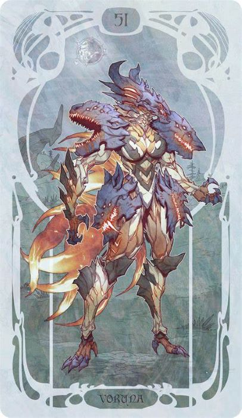
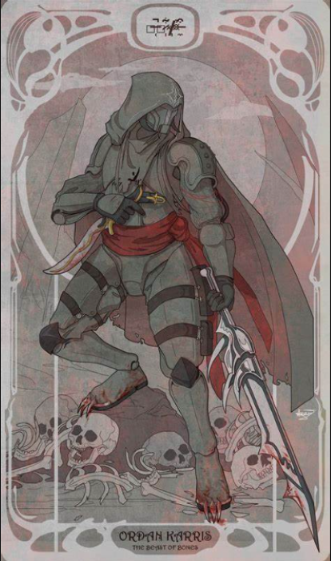
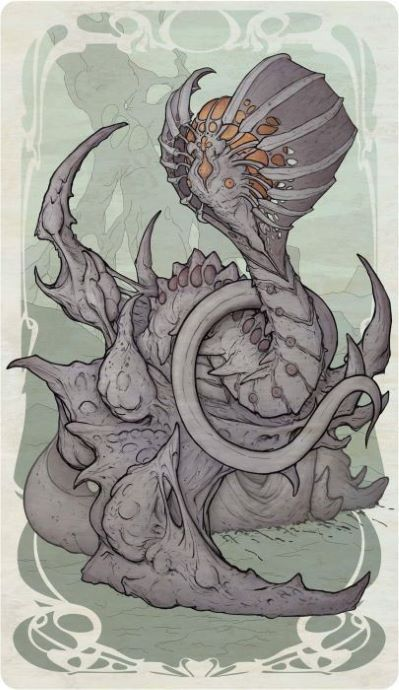

VORUNA

Four beasts, one heart. Voruna's loyal wolf pack makes for a deadly combination of strength and stealth. Beware the monstrous howl that heralds fangs of vengeance
VAUBAN

Vauban is the model of innovative technology. He deploys clever inventions to provide crowd control. His tenacity and focus make him formidable.
SEVAGOTH

No longer adrift in the Void, Sevagoth has returned. He and his Shadow deal heavy damage and have high survivability. They are sustained by the reaping of wayward souls.
ORDAN CHARIS

Ordan Karris serving the Orokin as a mercenary. Tormented by his actions in battle as the self-styled "Beast of Bones", and suffering from a terminal illness
JUGGULUS

A writhing tower of flesh and gristle, the Jugulus lurks beneath the surface and emerges to launch streams of organic projectiles from its wide maw.
FASS

He represents the "day" cycle of the Landscape, and is stuck in an eternal battle with his sister Vome for which there can be no victor.
Saxum

Saxum are bipedal, medium-sized assailants capable of short-ranged attacks and a powerful grand slam in melee.